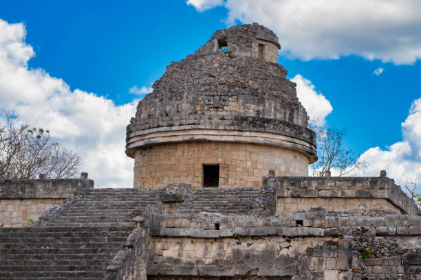
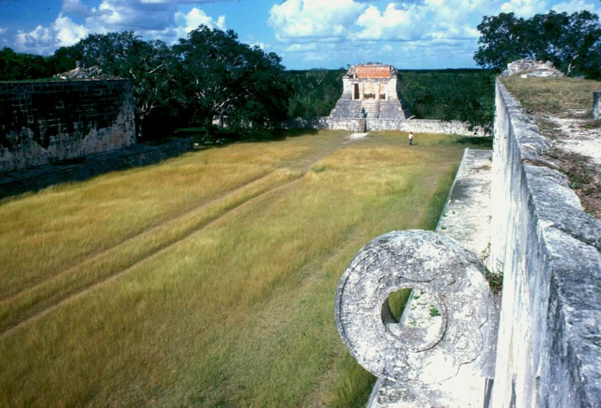

.jpg)
Chichén Itzá es una majestuosa ciudad prehispánica ubicada en el corazón de la península de Yucatán, México. Este antiguo centro ceremonial fue una de las ciudades más importantes de la civilización maya y hoy en día se alza como una de las atracciones turísticas más emblemáticas del país. Su estructura más famosa es la pirámide de Kukulkán, también conocida como El Castillo, una impresionante construcción que refleja el avanzado conocimiento astronómico y arquitectónico de los mayas. Cada equinoccio, miles de visitantes se reúnen para observar cómo la luz del sol crea la ilusión de una serpiente descendiendo por la escalinata de la pirámide. Además de la pirámide, Chichén Itzá cuenta con otros atractivos fascinantes como el Juego de Pelota más grande de Mesoamérica, el Cenote Sagrado, templos decorados con grabados, y el observatorio astronómico conocido como El Caracol. Sin duda, es un lugar lleno de historia, misterio y belleza natural.
Una de las Siete Maravillas del Mundo Moderno, símbolo central de Chichén Itzá.

Antigua estructura que los mayas usaban para observar los astros.
El campo de juego ceremonial más grande de Mesoamérica.
Un pozo natural de gran importancia ritual donde los mayas realizaban ofrendas.

| Fecha | Horario | Actividad | Lugar |
|---|---|---|---|
| 10/08/2025 | 7:00 AM | Salida del punto de encuentro | Cancún (Terminal de buses) |
| 10/08/2025 | 10:00 AM | Llegada a Chichén Itzá | Entrada principal |
| 10/08/2025 | 10:15 AM | Tour guiado por el sitio arqueológico | Pirámide, Juego de Pelota |
| 10/08/2025 | 12:30 PM | Tiempo libre para fotos y compras | Zona de artesanías |
| 10/08/2025 | 1:30 PM | Almuerzo tradicional yucateco | Restaurante "Ik Kil" |
| 10/08/2025 | 2:45 PM | Visita al Cenote Ik Kil | Cenote cercano |
| 10/08/2025 | 4:00 PM | Salida de regreso a Cancún | Estacionamiento principal |
| 10/08/2025 | 7:00 PM | Llegada a Cancún | Punto de partida |